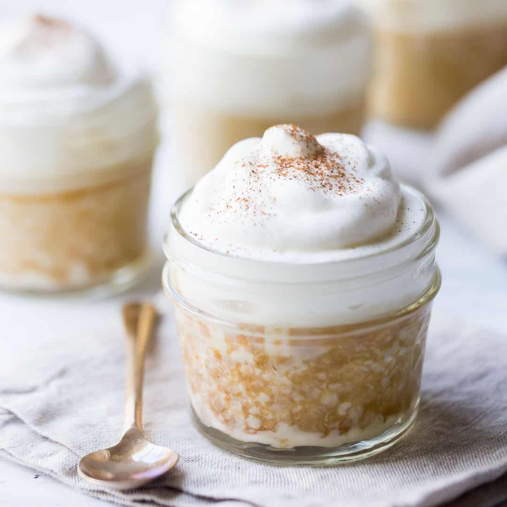

(“Pequeñas porciones, grandes sonrisas”).
• Porciones: 9.
• Tiempo: 1 h 15 min (35 min prep.
+ 30–40 horneado + reposo).
• Dificultad: fácil-medio.
-200 g harina (1 2/3 tazas).
-200 g azúcar (1 taza).
-4 huevos grandes (separa claras y yemas).
-1 cdita polvo de hornear.
-1 pizca sal.
-400 ml leche evaporada.
-400 ml leche condensada.
-200ml crema de leche (nata).
-Crema batida para cubrir y canela en polvo.
(breve):
1. Precalienta 180 °C. Bate claras a punto de nieve. Reserva.
2. Bate yemas con azúcar hasta cremoso; añade harina tamizada
con polvo de hornear y sal. Incorpora claras con movimientos envolventes.
3. Hornea 25–30 min en molde engrasado. Deja enfriar.
4. Mezcla las tres leches y perfora el bizcocho con un tenedor;
vierte la mezcla lentamente. Refrigera mínimo 2 h.
5. Cubre con crema batida y espolvorea canela.
Tips & presentación: sirve en porciones cuadradas con
canela.
Foto sugerida: porción con crema y canela cayendo.
“Solo se vive una vez, lame la cuchara” - Univision.
